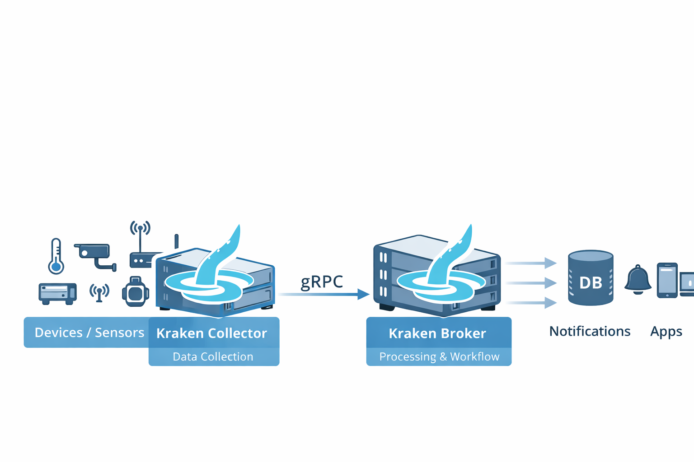

IoT, Smaller and Freer.
The right choice for environments where cloud IoT feels too heavy.
Kraken is an open-source IoT data router that combines Kraken Collector and Kraken Broker to flexibly build workflows for IoT data collection, processing, storage, and notification.
From small environments like Raspberry Pi to scalable container-based deployments, it grows with your needs and budget. While large-scale cloud IoT platforms have their place, Kraken is the practical alternative for teams who want to start smaller and more freely.

For environments where cloud IoT is a bit too much.
You want to start IoT, but the architecture becomes too heavy when including cloud, apps, and operations platforms.
This dilemma is common for companies pushing for field-driven IoT or teams looking to start with a small PoC.
Cost & Lock-in
Desire to minimize subscription costs. Reluctance to rely solely on cloud-first architectures.
On-Premises Focus
Need to manage all resources locally within the operational field or closed network.
Minimal Requirements
Want to start small without over-engineering. Preferring the ability to quickly build necessary functions over having excessive features.
Kraken was born from this background. While feature-rich cloud IoT platforms are necessary for some projects, many environments prioritize operational cost, data ownership, and compact configurations. Kraken is developed to let you "start IoT small" in exactly these scenarios.
Simplifying the IoT data flow from collection to processing.
Kraken is a two-layer IoT backend. The Collector receives data from diverse protocols and sources, and the Broker connects that data to processing, storage, notifications, and external systems.
By combining Collector and Broker, data sent from edge IoT sensors can be received in either cloud or on-premises environments and deployed into workflows tailored to your business needs.
Kraken Collector
A lightweight data collection layer handling diverse inputs.
An application that collects data from edge IoT sensors and peripheral systems. Implemented in Rust, it runs as a lightweight and scalable gRPC client for Kraken Broker. New collectors can be added as needed to extend functionality.
Kraken Broker
A flexible broker layer connecting received data to business logic.
A data broker that receives data from the Collector and executes custom processing such as transformation, storage, and notifications. Necessary operations can be written as brokers and executed asynchronously via events. Currently available in Python.
Field data from BraveJIG, straight into your workflow.
Leverage data collected by BraveJIG through Kraken's workflows.
BathTimeFish is the developer of Kraken and an integration support partner for BraveJIG. We can support you end-to-end, from acquiring field data to building the utilization platform.
Furthermore, via the BraveJIG CLI (paid component) provided by BathTimeFish, you can connect BraveJIG sensor data to Kraken Collector, and seamlessly construct pipelines for preprocessing, accumulation, notification, and external integration through Kraken Broker.
It doesn't end with just connecting a sensor. The acquired data must be structured, stored, notified, and passed to external systems for real business use. BathTimeFish provides comprehensive support from BraveJIG implementation to Kraken integration and operational design.
By designing not just the data collection but the subsequent steps, we ensure your IoT adoption goes beyond a PoC into actual operations.
Why Choose Kraken
Start Small
Runs on low-resource environments like Raspberry Pi, allowing you to start IoT small on-premises.
Not Cloud-Dependent
Does not assume cloud dependency, making it suitable for local fields, closed networks, and dedicated environments.
Build Quickly
Focuses on letting you quickly build the minimum necessary features for an IoT backend, rather than overwhelming you with unused capabilities.
Broad Input Paths
Supports diverse field inputs including Webhook, MQTT, BLE, serial, files, camera, email, and TCP.
Freely Extensible
You can add and customize Collectors and Brokers to fit your specific business logic and field requirements.
Free OSS
Available for free under an open license, allowing you to develop custom implementations and proprietary operations as needed.
Expand Value with BraveJIG Integration
Through the BraveJIG CLI provided by BathTimeFish, sensor data collected by BraveJIG can be ingested into Kraken, evolving into an IoT platform tailored to customer needs. It maximizes the strengths of BraveJIG, a modular IoT device that can start from a local LAN.
Where Kraken Shines
Suitable Cases
- Want to start from a small scale
- Want to operate on-premises or in closed networks
- Need to flexibly configure data collection, preprocessing, and storage
- Feel that cloud IoT platforms are too grandiose
- Want to quickly launch an IoT platform combined with field devices like BraveJIG
Cases That Might Not Be a Fit Immediately
- Want to rely on a large-scale managed cloud platform from day one
- Want to use a completely ready-made SaaS provided by a vendor
- Prefer introducing a finished business app rather than a custom design
Factory Equipment Monitoring
Collect sensor data, evaluate thresholds in the Broker, and connect to InfluxDB storage and Slack notifications.
IoT in Closed Environments
Build Collector/Broker on-premises in sites where cloud adoption is difficult, completing data workflows locally.
Rapid PoC & Trials
Create a minimal setup on a Raspberry Pi or Mini PC to quickly start collecting and testing data.
Legacy Equipment Connection
Gradually ingest data from existing equipment using serial communication, file monitoring, or TCP servers.
BLE Beacons & Email Triggers
Handle specialized entry points like iBeacon or SMTP to easily build data integrations matching field needs.
Platform via BraveJIG Sensors
Connect data collected by BraveJIG to Kraken via the BraveJIG CLI to build a full workflow including preprocessing, DB storage, and alerts.
Choose your deployment scale based on needs and budget
Kraken is designed not as a massive initial investment, but as a foundation that can start small and grow as needed.
Starter
Minimal Setup
Start with a single Raspberry Pi / Mini PC.
Best for:
PoC, validation, and single-site deployments.
Standard
Standard Setup
Stable operation on-premises or VMs.
Best for:
Continuous use involving multiple inputs, DB storage, and notification integration.
Scalable
Extended Setup
Scale Collector/Broker using containers.
Best for:
Multiple sites, diverse data flows, and operations eyeing future growth.
Because it's OSS, rely on pros only where you need to
Free to use Open Source
Kraken is available for free as open source. Within the scope of the license, you can freely deploy and customize it in your own environment.
Paid Support & CLI by BathTimeFish
In actual implementations, site-specific technical decisions are crucial. As the developer of Kraken, BathTimeFish offers implementation consulting, custom development, and maintenance support.
Furthermore, if you wish to fully integrate with BraveJIG, introducing the BraveJIG CLI (paid) provided by BathTimeFish allows you to seamlessly connect data into your workflow.
Support Offerings Example
FAQ
Try it first as OSS.
Consult the developers if needed.
Kraken is a highly flexible open-source platform created for sites wanting to start IoT small. You can try it immediately from GitHub. If you need implementation or scaling for real projects, BathTimeFish is here to support you.
What you'll learn from consulting
- Clarification of possible configurations with Kraken
- Feasibility and steps for BraveJIG integration
- Minimal setup for a PoC
- Scope of necessary customizations
- Rough implementation roadmap